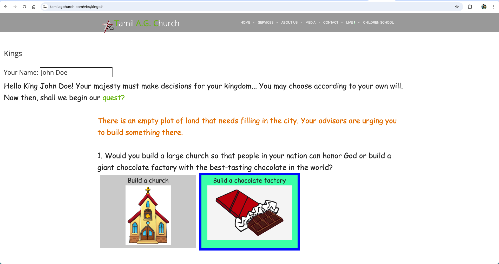
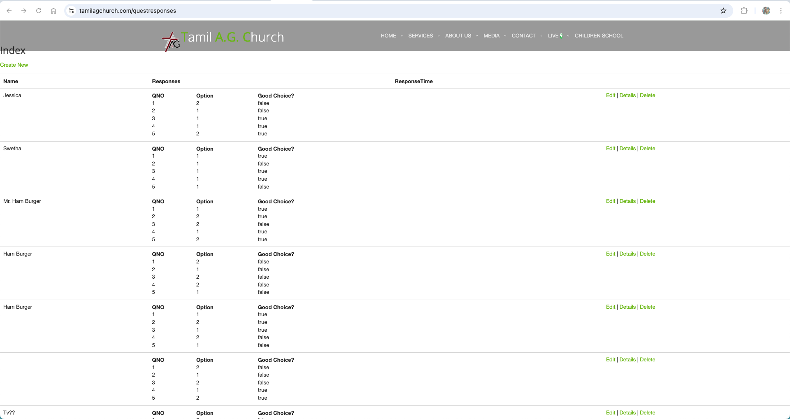

June 2021 – August 2021
Designed a fun and educational web game for children attending Vacation Bible School, integrating backend tracking for player progress.
HTML5, CSHTML, JavaScript, SQL, Azure DevOps
Children’s activities needed an online solution to stay engaged during virtual programs. The solution had to be browser-accessible with progress tracking.
Built browser-based game mechanics in JavaScript, with server-side CSHTML templates, integrated with a SQL database for user stats. Automated deployments with Azure DevOps pipelines.
Live Game: [Kings Game]
Player Data: [Kings Responses]
 